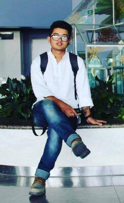

Nischal Man Bajracharya
HOME
BIOGRAPHY
CV
CONTACT

Biography
Nischal Man Bajracharya(1998), was born on Dharan-18, Sunsari, Nepal. His father name is Mr. Nirmal Man Bajracharya amd his mother name is Ms.Jyoti Rai. Nischal was very naughty at his childhood days. Nischal lived in Estern part of Nepal till his school life. He had complited his basic schooling level i.e. D.L.E and S.L.C in Mount Hermon Academy by securing distinction. After schooling level Nischal was influenced in political particties, he worked as a political client for serval months. He went Kathmandu the capital for his further study and started studying in United Academy, Kumaripati, Lalitpur. United Academy had bring Nischal a hope to study and recreation. Nischal has started being influnce in western music and had started learning it. He felt a lot of ups and downs when he had started learning it. He was influenced by his friends, his friend used to rap and to have a raps beat Nischal started beatboxing. At no time Nischal started beatboxing and in no time he was beating like a proffesional and have adwaded by a talent certificate from United Academy in the round of united talent hunt. Nischal Man Bajracharya is now studying in Nami college in association with the University Of Northampton as a computing student.
Quick Links